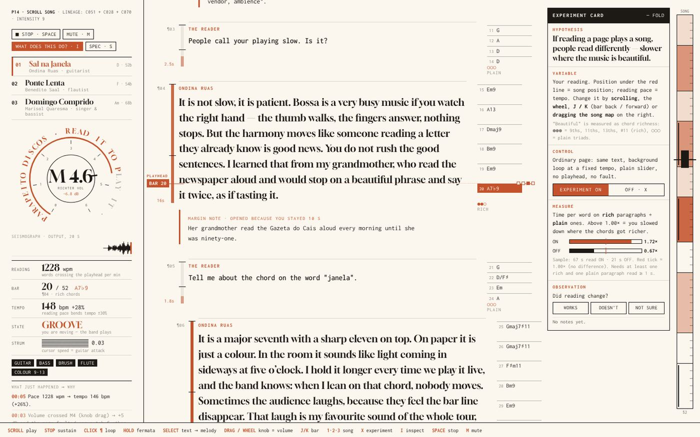

01Sound · reading
Scroll Song
- Rule
- Harmony and tempo
- Hand
- Your reading pace
- Makes
- A bossa song your scrolling plays
Three musicians talk about their records. The page is the score: the line under the red playhead is the bar being played, and the speed you read at sets the tempo.
1228 wpm → 148 bpm +28% Open the work → Scroll to play · stay 10 s to open a margin note · Space stops · M mutes